מה זה Claude Desktop ולמה להתקין?
Claude Desktop היא האפליקציה הרשמית של Anthropic למחשב. זה אותו Claude שאתם מכירים מהדפדפן - אותו חשבון, אותן שיחות, אותם מודלים - בתוך אפליקציה שמותקנת על המחשב עצמו, נפתחת מתפריט Start כמו Word או Outlook, ויושבת לכם בשורת המשימות.
חשוב להבין כבר עכשיו: ההתקנה לא מפצלת שום דבר ולא יוצרת "חשבון שני". שיחה שהתחלתם בדפדפן תופיע באפליקציה, ופרויקט שפתחתם באפליקציה יופיע בדפדפן. הכל מסונכרן דרך החשבון שלכם, באופן מיידי ואוטומטי.
אז למה בכלל להתקין, אם זה אותו Claude? משלוש סיבות עיקריות:
- סביבת עבודה נקייה. בדפדפן, Claude הוא עוד לשונית בין עשרות לשוניות - נבלע בין תיבת המייל, נט המשפט והחדשות. באפליקציה הוא חלון עבודה בפני עצמו: קל למצוא, קל לחזור אליו, קל לעבוד בו לצד מסמך פתוח.
- חיבור למחשב עצמו. האפליקציה יכולה להתחבר לתוכנות ולשירותים שאתם עובדים איתם, באמצעות Connectors - נרחיב על כך בסעיף 8.
- שער ליכולות המתקדמות. היכולת המשמעותית ביותר - עבודה של Claude במצב Cowork על תיקיות וקבצים אמיתיים במחשב המשרד - עוברת תמיד דרך האפליקציה. זהו הנושא של המדריך הבא בסדרה.
עמדת Legal Mind
אנחנו פוגשים לא מעט עורכי דין שנרתעים מהתקנת תוכנות - "עוד תוכנה", "מי יודע מה זה משנה במחשב". אז נאמר את זה ברור: ההתקנה הזו היא התקנה רגילה לחלוטין, כמו Zoom או Word. היא אינה דורשת ידע טכני, אינה משנה הגדרות במחשב, אינה נוגעת בקבצים שלכם בלי רשותכם, וניתנת להסרה מלאה בכל רגע - כמו כל תוכנה אחרת. ובמהלך ההתקנה תראו בעצמכם את האישור הרשמי של Windows לכך שהקובץ חתום על ידי Anthropic. המדריך הזה מלווה אתכם מסך אחר מסך, כולל צילום של כל שלב.
Claude בדפדפן מול Claude Desktop: מה באמת ההבדל?
נתחיל ממה שלא משתנה. החשבון שלכם אחד. ההיסטוריה, הפרויקטים, ה-Skills והמודלים - הכל אותו דבר, בכל מקום. אפשר להשתמש בדפדפן ובאפליקציה במקביל, באותו יום ואפילו באותה שעה - להתחיל טיוטה במשרד באפליקציה ולהמשיך אותה בערב מהדפדפן במחשב הבית.
| Claude בדפדפן | Claude Desktop | |
|---|---|---|
| חשבון, שיחות ופרויקטים | כן | כן - אותו חשבון, מסונכרן |
| חלון עבודה | נבלע בין הטאבים | אפליקציה עצמאית |
| חיבור לשירותי ענן (Gmail, Drive) | כן | כן, אותם חיבורים |
| חיבור לקבצים ולתוכנות במחשב | לא | כן |
| עבודת Cowork על קבצים במחשב | לא | כן (מדריך נפרד) |
| עדכוני גרסה | אוטומטי, בלי שתשימו לב | אוטומטי, עם לחיצת אישור אחת |
נעבור על השורות החשובות בטבלה, אחת-אחת:
חלון עבודה עצמאי. נשמע כמו הבדל קטן, אבל בעבודה יומיומית הוא מורגש מאוד. כשאתם באמצע ניסוח חוזה ורוצים להתייעץ עם Claude, אתם לא מחפשים את הלשונית הנכונה בין עשרים לשוניות פתוחות - האפליקציה שם, קליק אחד בשורת המשימות. אפשר להצמיד אותה לצד מסמך Word פתוח ולעבוד בשני החלונות במקביל.
חיבור לתוכנות ולקבצים. כאן צריך להבחין בין שני סוגי חיבורים. חיבורים לשירותי ענן, כמו Gmail, Google Drive ו-Slack, עובדים בכל מקום שבו אתם משתמשים ב-Claude - גם בדפדפן, גם באפליקציה וגם בטלפון. מה ששמור לאפליקציה הוא החיבור למחשב עצמו: לתיקיות, לקבצים ולתוכנות שרצות אצלכם. בדפדפן Claude רואה רק מה שהעליתם אליו ידנית. פירוט והדגמה - בסעיף 8.
עבודת Cowork על קבצים במחשב. זו הסיבה הגדולה באמת. במצב Cowork, Claude לא רק עונה לשאלות - הוא מבצע עבודה: מקבל גישה לתיקייה שבחרתם, קורא את הקבצים, יוצר מסמכים, מארגן ומסכם - ומגיש לכם תוצר מוגמר. את Cowork עצמו אפשר להפעיל גם מהדפדפן ומהטלפון, אבל הגישה לתיקיות ולקבצים שעל המחשב שלכם עוברת תמיד דרך האפליקציה, והיא פועלת רק כל עוד האפליקציה פתוחה על אותו מחשב. זהו נושא המדריך הבא בסדרה.
עדכוני גרסה. בדפדפן העדכון קורה מעצמו ואתם לא מרגישים בו. באפליקציה הוא גם קורה מעצמו, אבל אתם כן רואים אותו: כשיש גרסה חדשה מופיעה בתחתית סרגל הצד שורה בשם Relaunch to update, לוחצים עליה, האפליקציה נסגרת ונפתחת מעודכנת. שום שיחה ושום קובץ אינם נמחקים.
ואם לסכם בשורה אחת: הדפדפן מצוין לשיחה. האפליקציה הופכת את Claude לחלק מסביבת העבודה של המשרד.
ומה לגבי אפליקציית הטלפון? היא מצוינת לשאלות תוך כדי תנועה - בדרך לדיון, בין פגישות - ואפשר גם לפתוח ממנה משימת Cowork ולעקוב אחריה. מה שהיא לא יכולה לעשות לבדה הוא להגיע לקבצים שעל מחשב המשרד: לשם כך האפליקציה במחשב צריכה להיות פתוחה. שלושת הערוצים - דפדפן, מחשב וטלפון - חיים יחד באותו חשבון ומשלימים זה את זה.
אבטחת מידע: מה חשוב לדעת לפני
השאלה הראשונה שעורכי דין שואלים אותנו על האפליקציה היא כמעט תמיד שאלת אבטחה: "אם אני מתקין את זה על המחשב של המשרד - מה זה אומר על המידע שלי?"
התשובה העקרונית: התקנת האפליקציה אינה משנה את מדיניות המידע של החשבון. מה שקובע איך Anthropic מטפלת במידע שלכם הוא סוג המנוי - לא השאלה אם אתם עובדים בדפדפן או באפליקציה. אותם כללים שחלים על החשבון שלכם בדפדפן חלים עליו בדיוק גם באפליקציה.
נקודה שנייה שחשוב להכיר: האפליקציה אינה "סורקת את המחשב". היא רואה רק את מה שאתם נותנים לה במפורש - קובץ שצירפתם לשיחה, שירות שחיברתם ב-Connectors, או תיקייה שאישרתם ל-Cowork. שליטה על היקף הגישה נמצאת אצלכם.
עמדת Legal Mind
במשרד המטפל במידע של לקוחות, המנוי המתאים לעבודה הוא מנוי Team, הכולל התחייבויות חוזיות של Anthropic כלפי המשתמשים בנוגע לפרטיות המידע (DPA). הנושא כולו - מדוע דווקא Team, מה בדיוק כולל ה-DPA, ואיך עוברים מהמנוי הקיים בבטחה ובלי לאבד דבר - מוסבר בהרחבה במדריך המקיף של Legal Mind: מעבר בטוח למנוי Team ב-Claude. איננו חוזרים כאן על התוכן - הוא מחכה לכם שם, מסודר ומלווה צעד-צעד.
לפני ההתקנה: דרישות מערכת
הדרישות פשוטות, וכמעט כל מחשב משרדי שנרכש בשנים האחרונות עומד בהן:
- Windows 10 ומעלה - כלומר גם Windows 10 וגם Windows 11.
- במחשבי Mac: macOS 11 (Big Sur) ומעלה.
אין דרישות חומרה מיוחדות מעבר לכך - עיקר החשיבה מתבצעת בשרתי Anthropic ולא במחשב שלכם. במצבים שבהם Claude עובד על קבצים במחשב, הפעולות על הקבצים עצמם נעשות אצלכם, וגם הן אינן דורשות מחשב חזק. מה שכן נדרש: חיבור אינטרנט פעיל, בדיוק כמו בדפדפן.
המדריך מדגים את ההתקנה על Windows, מערכת ההפעלה הנפוצה במשרדים בישראל. ב-Mac התהליך מקביל ואף פשוט יותר: מורידים את הקובץ מאותו עמוד, פותחים אותו, וגוררים את Claude לתיקיית Applications - כמקובל בכל התקנת Mac.
הערה למחשבי Windows עם מעבד ARM (דגמים מסוימים של מחשבים ניידים חדשים): בעמוד ההורדה יש כפתור נפרד - Windows (arm64). אם אינכם יודעים מה סוג המעבד שלכם - כמעט בוודאות הכפתור הרגיל הוא הנכון עבורכם, והוא ברירת המחדל.
ונקודה אחת שכדאי לדעת מראש במשרדים עם מחלקת מחשוב: אם המחשבים במשרד מנוהלים על ידי גורם IT, ייתכן שהתקנת תוכנות דורשת את אישורו - כמו כל תוכנה. במקרה כזה, שלחו לו את המדריך הזה - כל המידע שהוא צריך נמצא כאן.
התקנה שלב אחר שלב
כל התהליך, מהורדה ועד אפליקציה עובדת, אורך בדרך כלל שתיים-שלוש דקות. עוברים אותו פעם אחת בלבד.
שלב 1 - הורדת קובץ ההתקנה
גלשו בדפדפן לעמוד ההורדה הרשמי של Anthropic:
claude.com/download
חשוב: מורידים אך ורק מהעמוד הרשמי הזה. לא מאתרי הורדות, לא מקישורים במייל. זה הכלל לכל תוכנה, ובוודאי לתוכנה שתעבוד לצד חומר מקצועי.
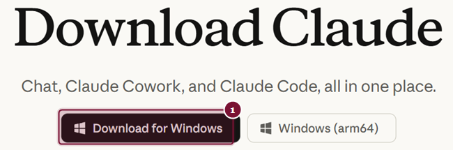
- 1לחצו על Download for Windows להורדת קובץ ההתקנה.
שלב 2 - איתור הקובץ שהורד
ההורדה קצרה - הקובץ שוקל מגה-בייטים ספורים. בסיומה, לחצו על אייקון ההורדות של הדפדפן (החץ כלפי מטה, ליד סרגל הכתובת) - ותראו את הקובץ שהתקבל. שם הקובץ: Claude Setup.exe.
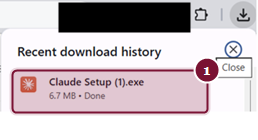
- 1הקובץ שהורד - לחצו עליו להפעלת ההתקנה. אפשר גם לאתר אותו בתיקיית ההורדות (Downloads) וללחוץ עליו לחיצה כפולה.
שלב 3 - אישור האבטחה של Windows
מיד אחרי הלחיצה יופיע חלון אבטחה של Windows, על רקע מסך שמתכהה. אל תיבהלו - זהו חלון תקין וצפוי, שמופיע בכל התקנת תוכנה. כך Windows מוודאת שאתם מאשרים את ההתקנה ביודעין, ובאותה הזדמנות היא מציגה לכם בדיקה חשובה: מי חתום על הקובץ.
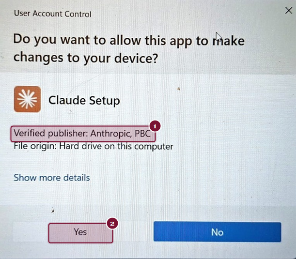
- 1השורה החשובה: Verified publisher: Anthropic, PBC - אישור רשמי של Windows שהקובץ חתום דיגיטלית על ידי Anthropic עצמה ולא שונה בדרך. זה בדיוק מה שמבדיל התקנה בטוחה מקובץ מפוקפק - ואם השורה הזו מופיעה, אתם בידיים טובות.
- 2לאחר שוידאתם - לחצו Yes.
שלב 4 - ההתקנה רצה מעצמה
מכאן הכל אוטומטי. חלון ההתקנה מוריד את רכיבי האפליקציה ומתקין אותם בעצמו - אין צורך לבחור תיקייה, לאשר שלבים או ללחוץ "הבא". בדרך כלל זה אורך דקה או שתיים, תלוי במהירות האינטרנט.
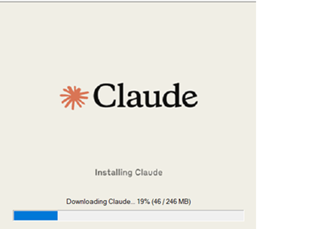
את ההתקנה הזו עושים פעם אחת בלבד. מכאן והלאה האפליקציה בודקת בעצמה אם יצאה גרסה חדשה, ומורידה אותה ברקע בלי להפריע לכם. כשהיא מוכנה מופיעה בתחתית סרגל הצד שורה בשם Relaunch to update עם מספר הגרסה החדשה. לוחצים עליה, האפליקציה נסגרת ונפתחת מעודכנת תוך שניות, וכל השיחות והפרויקטים במקומם.
אין צורך לחזור לעמוד ההורדה. אם בכל זאת תרצו להתקין גרסה מחדש - למשל אם האפליקציה מסרבת להיפתח אחרי עדכון, מצב נדיר שנפתר גם בהפעלה מחדש של המחשב - מורידים מאותו עמוד ומתקינים מעל הקיימת, ושום דבר לא נמחק.
פתיחה ראשונה והתחברות
פתיחת האפליקציה
בסיום ההתקנה, פותחים את האפליקציה דרך תפריט Start - בדיוק כמו כל תוכנה במחשב:
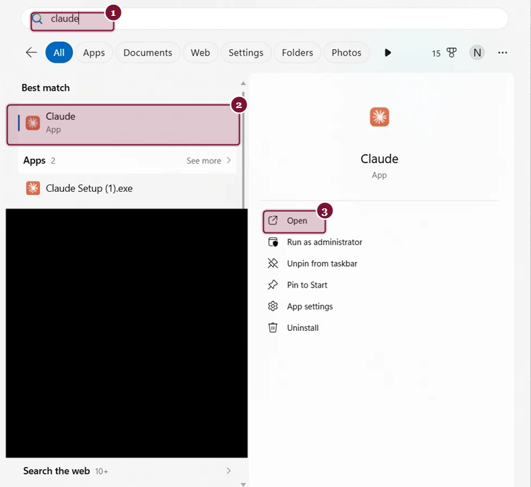
- 1לחצו על מקש Windows במקלדת והקלידו claude.
- 2האפליקציה מופיעה כתוצאה הראשונה, עם האייקון הכתום המוכר.
- 3לחצו Open (או פשוט Enter).
טיפ קטן שחוסך זמן: אחרי הפתיחה הראשונה, לחצו קליק ימני על אייקון האפליקציה בשורת המשימות ובחרו הצמדה (Pin to taskbar). מעכשיו Claude תמיד יהיה קליק אחד מכם, בלי לחפש.
התחברות עם החשבון הקיים
בפתיחה הראשונה - ורק בה - האפליקציה תבקש להתחבר. יופיע מסך פתיחה קצר:
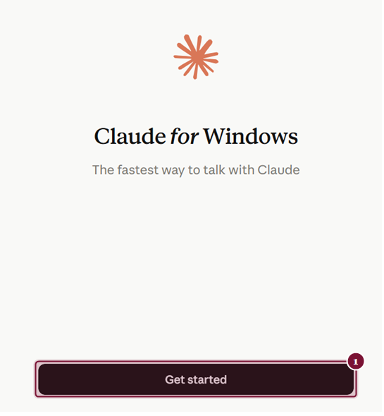
- 1לחצו Get started.
כעת מסך ההתחברות. הנקודה החשובה ביותר בכל הסעיף הזה: היכנסו עם אותו חשבון בדיוק שבו אתם משתמשים ב-Claude בדפדפן - אותה כתובת מייל או אותו חשבון Google. זה מה שמבטיח שכל השיחות, הפרויקטים וההגדרות שלכם יופיעו באפליקציה מהרגע הראשון. חשבון אחר = חשבון חדש וריק.
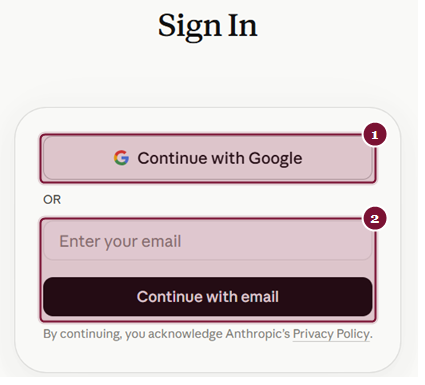
- 1אם אתם נכנסים ל-Claude עם חשבון Google - לחצו Continue with Google.
- 2אחרת - הזינו את כתובת המייל של החשבון ולחצו Continue with email. האימות יגיע אליכם למייל.
האימות עצמו נפתח בדפדפן - זו התנהגות תקינה ומכוונת, כך האפליקציה משתמשת בהתחברות המאובטחת הקיימת שלכם. בסיום האימות יופיע אישור קצר בדפדפן:
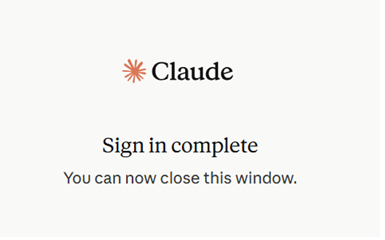
סיור ראשון באפליקציה
המסך הראשי ירגיש לכם מוכר מיד - הוא בנוי כמו Claude בדפדפן. נעבור על מה שרואים, ובעיקר על מה שחדש:
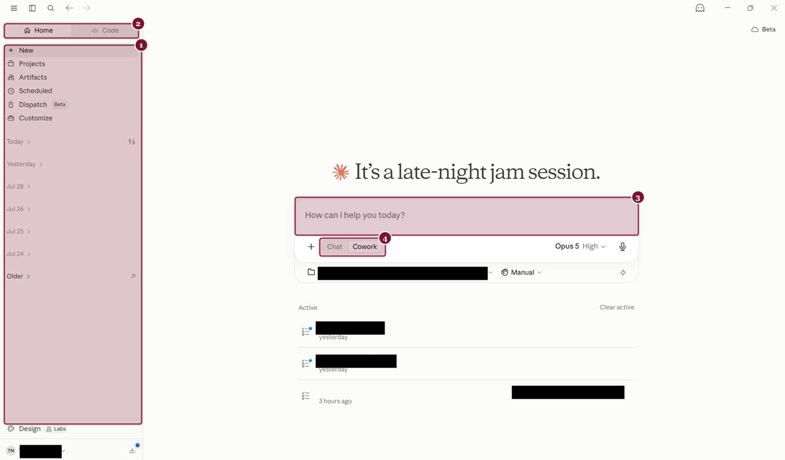
- 1סרגל הצד - השיחות, הפרויקטים וה-Artifacts שלכם, מסודרים לפי ימים, בדיוק כמו בדפדפן. כל מה שעשיתם עד היום - כאן.
- 2שני אזורי עבודה: Home - השימוש היומיומי שבו תבלו את רוב הזמן, ו-Code - כאן יושב Claude Code. השם מרמז על תכנות, אבל אין צורך לכתוב שורת קוד אחת כדי לעבוד שם: זהו המצב שבו Claude מקבל תיקייה שלמה של תיק ועובד על המסמכים שבתוכה. בתחילת הדרך תבלו את רוב הזמן ב-Home, ולכשתרצו - יש לכך מדריכים ייעודיים בסדרה.
- 3תיבת הכתיבה - כותבים ל-Claude בדיוק כמו שאתם רגילים. גם בחירת המודל נמצאת כאן, בפינת התיבה.
- 4המתג בין Chat ל-Cowork: Chat הוא שיחה רגילה. Cowork הוא המצב שבו Claude עובד בעצמו על משימות שלמות - כולל על קבצים במחשב שלכם. על Cowork - במדריך המקיף הנפרד.
שימו לב עד כמה המעבר טבעי: אין שום דבר ללמוד מחדש. מי שיודע לעבוד עם Claude בדפדפן יודע לעבוד באפליקציה - וההיפך. התוספות (כמו Cowork) מחכות לכם בדיוק היכן שסימנו, כשתהיו מוכנים אליהן.
תפריט החשבון
לחיצה על ראשי התיבות שלכם בפינה השמאלית התחתונה פותחת את תפריט החשבון - התחנה המרכזית לניהול:
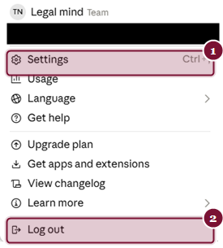
- 1Settings - כניסה להגדרות האפליקציה (או הקיצור Ctrl+,).
- 2Log out - התנתקות מהחשבון. השיחות אינן נמחקות - הן מחכות לכם בהתחברות הבאה.
מה יש באפליקציה ומה שמור רק לה
סעיף זה הוא סקירה - המטרה שתדעו מה קיים ואיפה למצוא אותו. ההדרכות המפורטות, כולל שיקולי המדיניות המשרדית, נמצאות במדריכים הייעודיים של הסדרה.
הגדרות האפליקציה
נפתח את ההגדרות (תפריט החשבון ואז Settings, או Ctrl+,). כך נראה המסך שנפתח:
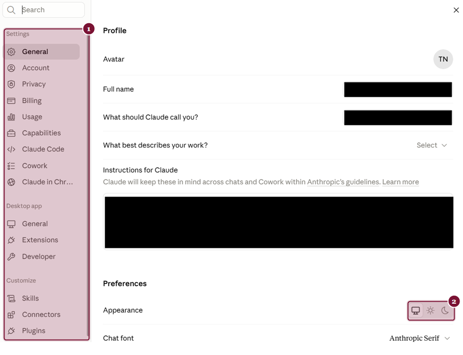
- 1קטגוריות ההגדרות. רובן מוכרות מהדפדפן, ושימו לב לקבוצה Desktop app - הגדרות שקיימות רק באפליקציה.
- 2Appearance - מעבר בין מראה בהיר לכהה, לפי העדפתכם. מתחתיו גם בחירת גופן התצוגה.
בעמוד זה אפשר גם להגדיר איך Claude יפנה אליכם, ולהזין הנחיות קבועות שילוו כל שיחה (Instructions for Claude) - למשל העדפות שפה וסגנון כתיבה. ההנחיות האלה חלות על החשבון שלכם בכל מקום, לא רק באפליקציה.
חיבור לשירותים - Connectors
Connectors מאפשרים ל-Claude להתחבר לשירותים שאתם עובדים איתם - לקרוא מהם מידע ולעבוד איתם ישירות מתוך השיחה, בהתאם להרשאות שאישרתם. החיבורים שתראו כאן, כמו Gmail ו-Google Drive, אינם בלעדיים לאפליקציה והם יעבדו לכם גם בדפדפן. מה שכן בלעדי לה הוא החיבור לקבצים ולתוכנות שעל המחשב עצמו:
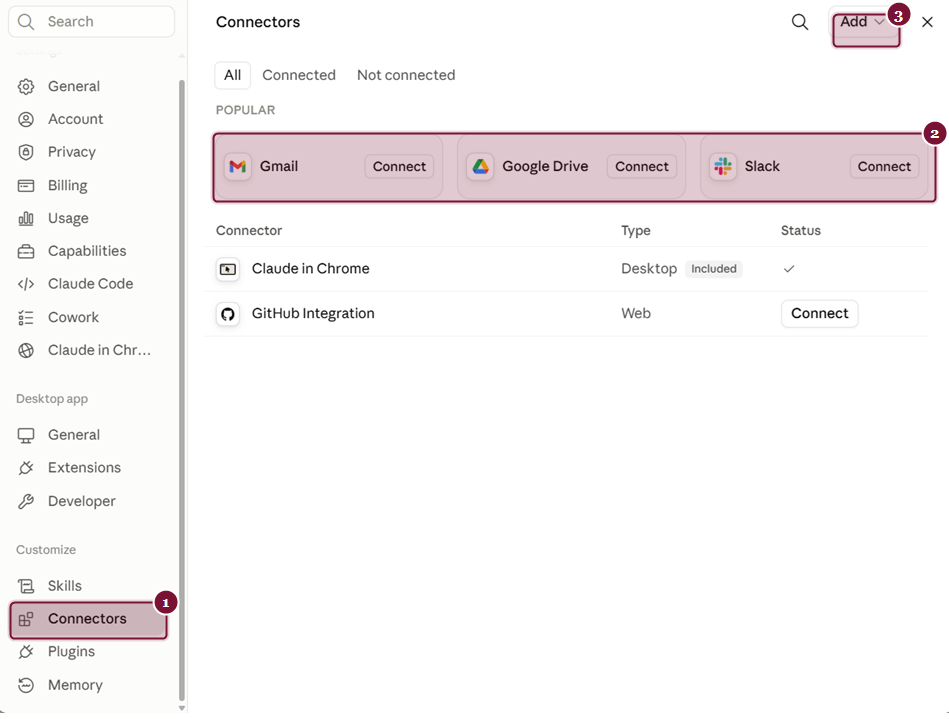
- 1הקטגוריה Connectors בתפריט ההגדרות (תחת Customize).
- 2החיבורים הפופולריים מוצגים ראשונים: Gmail, Google Drive ו-Slack. חיבור מתבצע בלחיצת Connect ואישור הרשאות.
- 3הכפתור Add - פותח קטלוג של שירותים נוספים שאפשר לחבר, מעבר למה שמוצג בעמוד.
מה זה נותן בפועל? דוגמה: אחרי חיבור Google Drive, אפשר לבקש מ-Claude לאתר מסמך ולעבוד עליו - בלי להוריד ולהעלות קבצים ידנית. החיבורים הם אישיים לחשבון שלכם, וכל חיבור ניתן לניתוק באותו מסך בכל רגע.
חיבור שירותים בסביבה משרדית הוא החלטה של מדיניות, לא רק של נוחות: חיבור Connector משמעו שמידע מהשירות המחובר נגיש ל-Claude במסגרת השיחות שלכם. לפני חיבור בארגון - ודאו שהדבר תואם את מדיניות המשרד, ומי מוסמך לאשר זאת. ראו הרחבה על קביעת מדיניות משרדית במדריך המעבר למנוי Team.
עוד שתי יכולות ששמורות ל-Desktop
- שורת שאלה מהירה. הקשה על Ctrl+Alt+Space (ב-Mac: הקשה כפולה על Option) פותחת שורת כתיבה קטנה מעל כל תוכנה שפתוחה, בלי לעבור לחלון האפליקציה. בווינדוס זו שורת כתיבה בלבד. ב-Mac אפשר לצרף אליה גם צילום של אזור במסך או תוכן של חלון, וקיימת בה הכתבה קולית.
- עבודת Cowork על הקבצים במחשב (זמינה במנויים בתשלום). היכולת המשמעותית ביותר של האפליקציה, וזו שלשמה התכנסנו: במצב Cowork, Claude מקבל מכם משימה שלמה - למשל לארגן תיקיית מסמכים של תיק, להפיק סיכום ממקבץ קבצים, או להכין טיוטה על בסיס חומר קיים - ועובד עליה בעצמו, שלב אחר שלב, עד תוצר מוגמר. הגישה לתיקיות שעל המחשב שלכם מתאפשרת רק דרך האפליקציה, ובשליטתכם המלאה: גם כשמפעילים Cowork מהדפדפן או מהטלפון, הוא מגיע לקבצים שלכם רק כל עוד האפליקציה פתוחה על אותו מחשב. אם היא סגורה, העבודה ממשיכה לרוץ אבל בלי הקבצים המקומיים. הנושא הזה, על כל שיקוליו, מוסבר בהרחבה במרכז מדריכי Cowork של Legal Mind לעורכי דין - ההמשך הישיר של מדריך זה.
שאלות נפוצות
התקנתי את האפליקציה - השיחות שלי מהדפדפן ייעלמו?
לא. הכל מסונכרן דרך החשבון. כל השיחות, הפרויקטים וההגדרות מופיעים גם באפליקציה וגם בדפדפן, והם ממשיכים להתעדכן בשני המקומות במקביל.
אפשר להמשיך להשתמש גם בדפדפן?
כן, במקביל וללא הגבלה. רבים עובדים כך: האפליקציה במחשב המשרד למשימות העומק, והדפדפן כשעובדים ממחשב אחר - בבית, בדיון, אצל לקוח.
ההתקנה עולה כסף? זה מנוי נוסף?
לא. האפליקציה עצמה חינמית לחלוטין, והיא עובדת עם המנוי הקיים שלכם - מה שיש לכם היום בדפדפן הוא בדיוק מה שיהיה לכם באפליקציה. שום חיוב חדש.
אפשר להתקין על כמה מחשבים?
כן. מתקינים על כל מחשב רלוונטי - במשרד ובבית - ומתחברים בכולם עם אותו חשבון. הכל מסונכרן בין כולם.
איך מעדכנים גרסה?
לא צריך לעשות דבר. האפליקציה מתעדכנת בעצמה, וכשהגרסה החדשה מוכנה מופיעה בתחתית סרגל הצד שורה בשם Relaunch to update. לחיצה עליה סוגרת ופותחת את האפליקציה מעודכנת, בלי שאובד דבר. אפשר גם להתעלם ממנה ולהמשיך לעבוד, והיא תמתין לכם.
איך מסירים את האפליקציה אם רוצים?
כמו כל תוכנה: Settings > Apps של Windows, מאתרים את Claude ולוחצים Uninstall. החשבון והשיחות אינם נמחקים - הם נשארים זמינים בדפדפן, ואם תתקינו שוב בעתיד, הכל יחזור.
הממשק באנגלית - זה מפריע לעבודה בעברית?
לא. כפתורי הממשק באנגלית, אבל העבודה עצמה - השיחות, המסמכים, התוצרים - מתנהלת בעברית באופן מלא, בדיוק כמו בדפדפן.
ההתקנה דורשת הרשאות מנהל מיוחדות?
לא מעבר לאישור הרגיל של Windows שראינו בשלב 3. במחשבים משרדיים המנוהלים על ידי גורם IT, ייתכן שתצטרכו את אישורו - כמו לכל התקנת תוכנה.
נקודת סיום: מה הלאה?
אם עברתם את המדריך - יש לכם עכשיו:
- אפליקציית Claude Desktop מותקנת ומחוברת לחשבון הקיים, עם כל השיחות והפרויקטים במקומם.
- הבנה מתי עובדים בדפדפן, מתי באפליקציה - ולמה זה בכלל לא "או-או".
- היכרות עם המסך הראשי: סרגל הצד, Home ו-Code, והמתג בין Chat ל-Cowork.
- ידיעה היכן ההגדרות, מה הם Connectors, ומה שיקול המדיניות שסביבם.
הצעד הבא בסדרה: מרכז מדריכי Cowork של Legal Mind לעורכי דין - שם תלמדו איך להפוך את Claude משותף לשיחה לעוזר שעובד בשבילכם: על משימות אמיתיות, בקבצים אמיתיים, עם תוצרים מוגמרים.
ואחריו, כשתהיו מוכנים: הלשונית Code שראיתם בסעיף 7. שם Claude מקבל תיקייה שלמה של תיק, קורא את כל המסמכים שבה - כולל סרוקים שאין בהם טקסט - ומבצע עבודה שממשיכה לרוץ גם כשאינכם יושבים מולו. לכך מוקדשים מדריכי Claude Code של Legal Mind, ואין צורך בידע בתכנות כדי להתחיל בהם.